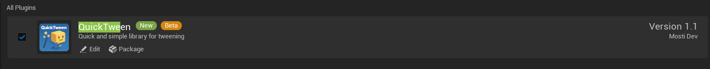
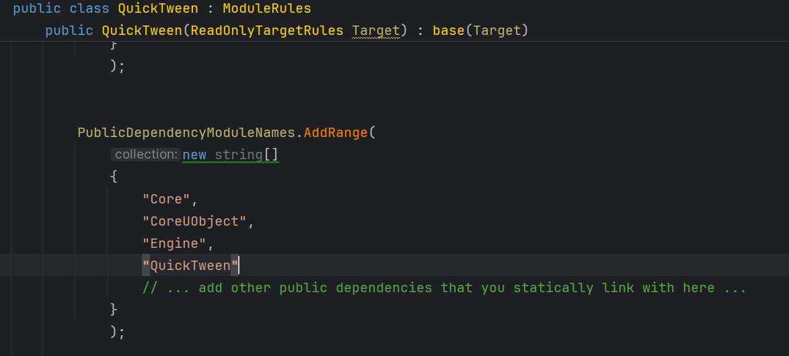
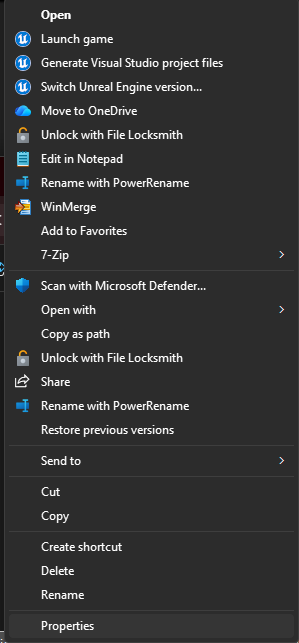
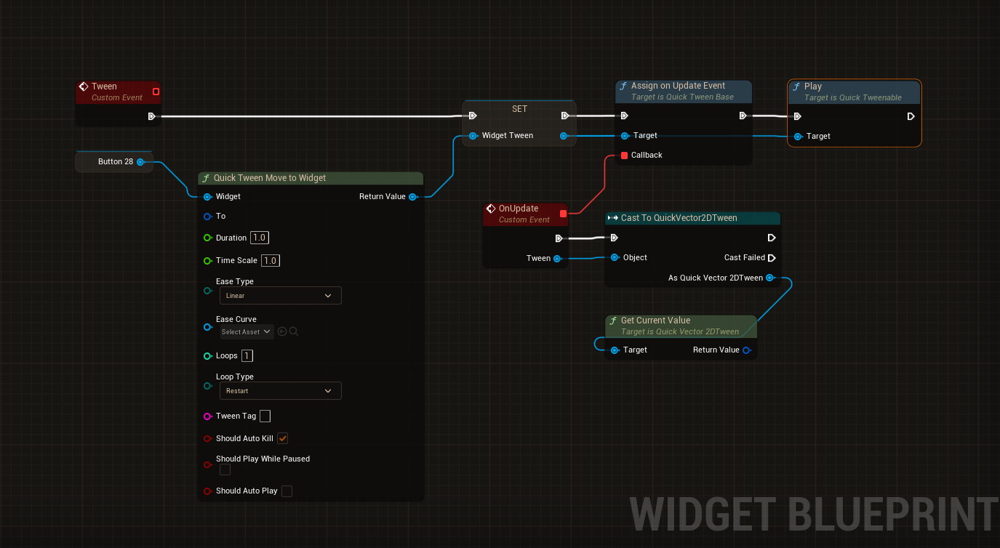
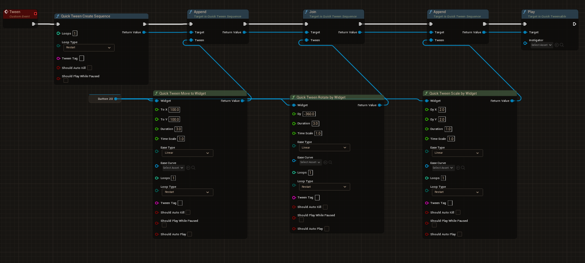
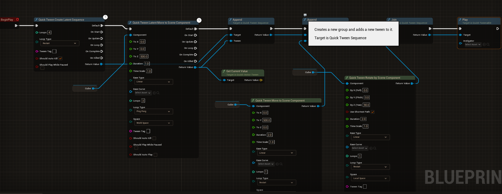

|
QuickTween 1.4.1
|
|
QuickTween 1.4.1
|
QuickTween is a lightweight, fast, and flexible tweening framework for Unreal Engine, designed to make value interpolation smooth and easy to use in both C++ and Blueprints.
Tweening, short for “in-betweening,” is the process of smoothly transitioning a value over time.
Instead of instantly jumping from one state to another, tweening calculates gradual steps in between, creating fluid motion or progression.
Tweening can be applied to many things:
Rather than manually updating values every frame, a tweening system handles the timing, interpolation, easing, and completion events for you.
Why is Tweening Useful?
Tweening allows developers to achieve polished motion and feedback with minimal effort.
Its benefits include:
Whether used for subtle UI animations or dynamic gameplay sequences, tweening helps make interactions feel responsive, polished, and engaging.
This is where QuickTween comes in: providing an easy and flexible way to apply tweening inside Unreal Engine, both in C++ and Blueprints.
This guide covers installation for both Blueprint and C++ workflows. We will also explore examples to help you understand what QuickTween can do.
If you need a feature that the current version doesn't have. Send me an email to "mosti.dev@gmail.com" with the subject **Request - <Feature Name> **, and a description of what you would need.
If you see something that is not working correctly, plese send me an email to "mosti.dev@gmail.com" with the subject ** Bug - <Descriptive Name> **, what engine version are you using, a description of the bug, callstack if possible, steps to reproduce and any other thing that could be helpful to fix it.
First, let’s walk through how to install QuickTween.
After purchasing the plugin from the Fab Store, it will appear in your Vault.
If it does not show up immediately, restart the launcher to refresh your library.
Once visible in your Vault, click Install to Engine and select the engine version that matches your target project.
When the installation completes:

That’s all you need. Once the editor restarts, QuickTween is ready to use in Blueprints.
C++ requires one additional step.


If everything compiles successfully, you are ready to start using QuickTween in C++.
How does QuickTween work?
To understand QuickTween, it helps to know the key building blocks behind its framework.
The system is designed around modular components that define how tweens behave and how values update over time.
UQuickTweenable is the common interface shared by all tween objects.
It defines what you can do with any tween instance, such as:
When a tween is part of a UQuickTweenSequence, only the owner is allowed to control it.
If you are working with a tween that is not owned by a sequence, you can control it otherwise actions like "Play", "Pause" or "Complete", among others, will not be executed.
This design ensures that ownership and execution order remain consistent when sequences manage multiple tweens.
UQuickTweenBase is the foundational class for all specific tween types.
It provides almost all the functionality required for interpolation while remaining generic enough to work with different data types (float, vector, rotator, and others).
Derived classes extend this base to define how their specific data type is updated.
For example, a vector tween overrides the ApplyAlphaValue and HandleOnComplete functions to apply its value changes correctly.
Since UQuickTweenBase does not know about the details of the data type it manipulates, it is the responsibility of each derived class to:
In derived tween classes, you will notice that the system requires functions to retrieve both the From and To values.
This design allows flexibility when supplying values at runtime.
UQuickTweenSequence is a container designed to run multiple tweens either in parallel or in order.
It can manage both simple tween objects and nested sequences, allowing you to build behaviour ranging from straightforward transitions to deeply layered animation flows.
A key aspect of the system is ownership.
Only the outermost sequence is responsible for coordinating all nested tweens and sub-sequences.
Because of this, it is also the only sequence that can be directly controlled through the UQuickTweenable interface.
In other words, when working with sequences:
This ensures predictable behaviour and prevents conflicting updates when working with complex tween structures.
For adding tweens we have two functions
UQuickTweenManager is a singleton created alongside the UWorld, and it is destroyed when the UWorld is unloaded.
Its purpose is to coordinate and drive all active tweens.
The manager:
When a tween (or the outermost tween in a sequence) is marked for removal, the manager clears it from the active list.
Only the outermost tween is managed by the manager, other sub tweens are the outermost responsability. This ensures proper lifecycle management, avoids orphaned tweens, and keeps performance predictable.
QuickTween includes a wide range of easing functions to shape motion behaviour.
These functions define how values accelerate or decelerate over time, giving animations more personality than simple linear interpolation.
QuickTween provides the following easing functions out of the box:
Users can also define their own easing curves, as long as they operate within the expected range of 0 to 1.
To support tween creation in Blueprints, QuickTween provides two Blueprint libraries:
Both libraries expose the same set of functions.
The difference lies in execution style:
This gives you flexibility depending on whether you want to trigger tweens instantly or integrate them directly into Blueprint execution flow.
All tweens provide event functions for Start, Update, Loop, Complete and OnKilled.
Note: You can enable auto play and the node after the assign is unecessary.



All of things in UQuickTweenLibrary can be also be used in C++
In C++, you can either use the non-latent functions from UQuickTweenLibrary or manually construct tweens yourself.
The following example demonstrates how to move an actor upward by 100 units over 2 seconds.
All three functions use weak lambdas to ensure safety if the target component is destroyed before the tween finishes.
Once configured, the tween starts automatically, moves the actor upward over time, and cleans itself up when it finishes.
If we want to put the previous tween in a sequence we can do the following:
To simplify usage, we can rely on UQuickTweenLibrary.
This library function handles sequence creation internally and invokes the setup process for us, allowing tweens to be created with minimal boilerplate.
The first tween added to a sequence can use either Join or Append, since there is no existing order yet.
After the first tween, ordering becomes important:
This gives you control over whether tweens run sequentially or simultaneously as you build the sequence.
Thanks for using QuickTween, please if you have any question, comment or request contact me at mosti.nosp@m..dev.nosp@m.@gmai.nosp@m.l.co.nosp@m.m